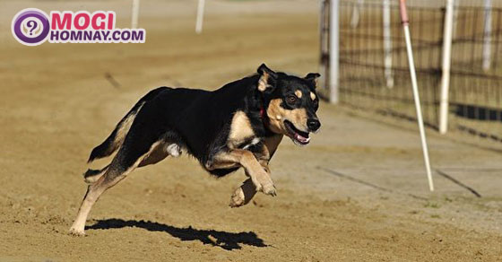

Mơ thấy con chó số mấy? Giải mã giấc mơ thấy chó là điềm gì?
- Quảng Ninh: xe khách bị container đè bẹp, nhiều người thương vong
- Lào Cai: Xe cẩu lao xuống vực, 2 người mắc kẹt trong cabin
- Mơ thấy chó chết là điềm gì? Nằm mơ thấy chó chết đánh con gì?
- Đồng Nai: Người phụ nữ tử vong ngay khi va chạm với xe Ben
- Nằm mơ thấy cà phê đánh con gì? Chiêm bao thấy cà phê điềm gì?
Mơ thấy chó là giấc mơ rất phổ biến, chiêm bao này cũng giống với các giấc mơ khác đều mang đến những ý nghĩa và điềm báo khác nhau báo trước cho công việc, sức khỏe hay tình cảm. Vậy có giấc mộng thấy con chó này có ý nghĩa gì, báo điềm lành hay dữ? Khi chiêm bao thấy chó đánh số mấy để được may mắn.
Hãy cùng sổ mơ lô đề 2020 đoán điềm giải mộng và tìm hiểu câu hỏi mơ thấy con chó là số mấy?
1. Giải mã giấc mơ thấy chó? Điềm báo tốt hay xấu?
Chó là loài vật thân quen với với bất cứ ai và được nuôi rất nhiều. Nó được coi là người bạn trung thành nhất đối với con người. Ngoài chức năng làm con vật canh gác, bảo vệ nhà cửa thì hiện nay chó còn trở thành thú cưng của nhiều người. Chắc hẳn, con vật thân quen này bạn cũng gặp nhiều trong giấc mơ phải không? Vậy mơ thấy con chó là có ý nghĩa gì, nó có mang đến điềm báo gì hay không?
Dưới đây là một số giải mã giấc mơ thấy chó là điềm gì mà bạn có thể tham khảo.
Nằm mơ thấy chó
Nhìn chung, khi mơ thấy một con chó cho thấy giá trị mạnh mẽ và mục đích tốt đẹp luôn tiến về phía trước và mang đến thành công cho bạn.
Các trường hợp thường gặp khi nằm mơ thấy chó
Mơ thấy một chú chó vẫy đuôi vui mừng trong giấc mơ cũng có thể là đang đại diện cho một người nào đó trong cuộc sống của bạn, chẳng hạn như những người bạn luôn trung thành, nhiệt tình và thật lòng với bạn.
Chiêm bao thấy chó trong giấc mơ cũng cho biết bạn có một kỹ năng mà bạn có thể đã bỏ qua hoặc đã bị lãng quên.
Mơ thấy 2 con chó
Giải mã giấc mơ thấy 2 con chó mang ý nghĩa không tốt, có thể trong tương lai bạn sẽ phải đối mặt với nhiều thử thách để bảo vệ công việc của mình.
Nằm mơ thấy 3 con chó
Giấc mơ thấy 3 con chó ẩn chứa những may mắn, nó như một thông điệp về niềm vui kinh tế đến với gia đình bạn vậy.
Ngủ mơ thấy nhiều chó
Bạn nằm mơ thấy không phải là 2, 3 hay mơ thấy 4 con chó nữa mà là rất nhiều chó thì giấc mơ thấy bầy chó hàm ý bạn sẽ có người giúp đỡ thoát khỏi những cạm bẫy trong làm ăn kinh doanh.
Mơ thấy chó trắng
Giải mã giấc mơ thấy chó trắng cho thấy cuộc sống của bạn khá thoải mái, các mối quan hệ của bạn đều phát triển tốt, thời gian tới bạn sẽ nhận được sự giúp đỡ từ nhiều người.
Mơ thấy chó vàng
Mộng thấy chó vàng, 2 con chó vàng mang tới nhiều niềm may mắn, tài lộc cho bạn, thời gian tới là thời điểm vàng để bạn phát triển và thu về những nguồn lợi lớn cho mình.
Nằm mơ thấy chó vào nhà
Theo giải mộng dân gian, nếu bạn mơ thấy chó chạy vào nhà thì đây là điềm báo rất tốt lành, nó tượng trưng cho sự thành đạt, làm ăn gặp nhiều may mắn của bạn trong thời gian tới.
Mơ thấy bị chó cắn
Nếu điều này xuất hiện trong giấc mơ của bạn thì có thể người thân của bạn đang có hiềm khích với ai đó. Một vài trường hợp bạn phải đứng ra để giải quyết mọi việc, tuy nhiên bản thân có thể bị vạ lây.
Bạn cũng cần cẩn trọng với các mối quan hệ trong công việc hoặc trong công ty của bạn. Hãy thật tỉnh táo và sáng suốt để tránh bị lừa nhé.
Chiêm bao bị chó đuổi
Giấc mơ cho thấy bạn cảm thấy mình bị ai đó đối xử không tốt hoặc có thể bạn đang bị phản bội. Giấc mơ còn cho thấy bạn là người thiếu tự tin, thường bỏ lỡ những cơ hội tốt dành cho mình. Hãy thay đổi bản thân theo chiều hướng tích cực để có được những điều mới mẻ hơn trong cuộc sống.
Ý nghĩa và điềm báo giấc mơ thấy chó
Mộng thấy chó chết là điềm lành hay dữ
Nếu bạn mơ thấy chó chết thì điều này cho thấy bạn đang ngày càng trở nên xấu xa hơn trong cách nhìn nhận và đối xử của mình. Nếu không biết giữ gìn các mối quan hệ với bạn bè, bạn có thể mất đi những mối quan hệ tốt.
Một số giấc mơ thấy chó khác
- Nằm mơ thấy chó sủa hàm ý bạn nên xem lại những cách cư xử của mình trong thời gian này, có thể những hành động mà bạn cho rằng không đáng để tâm lại gây ra sự khó chịu đối với người khác.
- Nằm mơ thấy hai con chó cắn nhau ám chỉ bạn đang cảm thấy xấu hổ về những tranh cãi và xô xát với mọi người.
- Mơ thấy chó mực mang điềm báo xấu về mặt tài chính của bạn, thời gian tới ra đường nên cẩn thận trộm cắp, móc túi, bên cạnh đó giấc mơ này cũng thể hiện tính cách của bạn, xem giải mã chi tiết chiêm bao thấy chó này tại mơ thấy chó đen.
- Mơ bắt được chó có thể bạn đang là đối tượng mà nhiều người hướng tới, tương lai bạn nên cẩn thận với những món quà không rõ nguồn gốc vì chúng có thể khiến bạn đối mặt với những khó khăn không thể lường trước được.
- Mơ thấy chó bắt chuột bạn nên cố gắng hơn nữa để hoàn thành công việc của mình, mặc dù có thể nó không hợp hay bạn đã chọn sai đi nữa thì cũng không nên bỏ dở giữa chừng.
- Chiêm bao mua chó hay mơ thấy nuôi chó thì giấc mơ này thể hiện bạn đang có những mong muốn được người khác ủng hộ.
- Mơ thấy đầu chó là điềm báo tốt, bạn sắp tìm được công việc phù hợp với bản thân.
- Ngủ mơ thấy tắm cho chó thể hiện tấm lòng vị tha, rộng lượng của bạn.
- Mơ thấy rắn và chó cho thấy bạn đang thực hiện một quyết định không quá sáng suốt, mặc dù đã nhận được sự góp ý của nhiều người nhưng bạn vẫn cố chấp thực hiện. Thời gian sắp tới chắc chắn bạn sẽ nhận lại những hậu quả từ các quyết định của bản thân.
- Nằm mơ thấy cho chó ăn mang ý nghĩa khuyên nhủ bạn nên giải quyết ổn thỏa các mối quan hệ cũ trước khi muốn bắt đầu một mối quan hệ khác để tránh những rắc rối không hay xảy ra.
- Nằm mơ thấy chó dữ hàm ý mối quan hệ của bạn khá bấp bênh, nên đề phòng có người chơi xấu, lừa dối.
- Nằm mơ thấy cứt chó nhắc nhở bạn nên loại bỏ những điều không hay ra khỏi cuộc sống, đừng để nó ảnh hưởng tới công việc của bạn.
- Mơ thấy thịt chó bạn cần cẩn thận để tránh những rắc rối trong các mối quan hệ của chính mình.
- Mơ thấy chó con cho thấy tính cách và những điềm báo bất ngờ cho tương lai.
- Nằm mơ thấy ve chó thể hiện những cố gắng và nỗ lực phấn đấu của bạn.
Xem thêm: Mơ thấy gà là điềm tốt hay xấu? Con gà đánh số mấy may mắn?
2. Nằm mơ thấy chó đánh con gì? Mơ thấy con chó số mấy?
Nằm mơ thấy chó đánh con gì may mắn nhất? Mơ thấy chó là số mấy? Tổng hợp tịch số đề con chó mà bạn có thể tham khảo chi tiết dưới đây.
Khi bạn nằm mơ thấy chó thì cặp số 29, 59, 95 sẽ đem lại may mắn cho bạn. Tuy nhiên, tùy thuộc vào mỗi hoàn cảnh trong giấc mơ mà sẽ có những con số tương ứng khác phù hợp hơn.

Nằm mơ thấy chó đánh con gì may mắn nhất?
- Mơ thấy chó con đánh con gì? Mơ thấy con chó đánh ngay 48, 49
- Nằm mơ thấy hai con chó đánh 94, 96
- Chiêm bao thấy bị chó cắn đánh số 29, 92, 93
- Mộng thấy chó đen đánh số 68, 94
- Mơ thấy chó đẻ đánh số 51, 91
- Ngủ mơ thấy bị chó đuổi đánh ngay số 38, 58
- Mơ thấy chó bị giết đánh số 36, 45
- Ngủ mơ đi xe đâm vào chó đánh con gì? Đánh ngay 51, 91
- Ngủ mơ thấy chó mực là số 68, 94
- Mơ thấy chó trắng vào nhà là số 57, 52
- Nằm mơ chó chạy vào nhà đánh con gì? Thử vận may số 51
- Ngủ mơ thấy chó dính lẹo đánh số 02, 20
- Chiêm bao gặp chó giao phối đánh con gì? Đánh ngay số 64
- Mơ thấy chó cắn nhau đánh con gì? Đánh 23, 47
- Ngủ mơ thấy người đẻ ra chó 68
- Mơ thấy chó mèo cắn nhau đánh con gì 90
- Mơ thấy chó trắng đánh con gì? Đánh số 45
- Mơ thấy chó trắng cắn đánh con 97
- Mơ thấy chó khóc đánh con gì 77, 15
- Mơ thấy chó vàng đánh cặp 59, 95
Mỗi giấc mơ đều mang đến một ý nghĩa khác nhau, tùy theo từng trường hợp, bối cảnh mà sẽ có những con số khác nhau. Vậy giấc mơ thấy cho còn được áp dụng trong những trường hợp nào mời các bạn hãy cùng tham khảo chi tiết dưới đây.
3. Những trường hợp áp dụng khi mơ thấy chó
Với một số trường hợp khi bạn nằm mơ thấy chó thì áp dụng các con số may mắn hôm nay sẽ giúp bạn có được vận may trong cuộc sống và trong lô đề. Đặc biệt, nếu giấc mơ rơi vào những ngày Tuất, tháng Tuất thì tỷ lệ con số sẽ về cao hơn.
Đôi khi trong giấc mơ và thực tế thì lại có những điểm trái ngược hoàn toàn, bạn không nên quá tinn vào những gì xảy ra trong giấc mơ. Giấc mơ chỉ mang đến cho bạn những điềm báo, nếu biết được ý nghĩa cùng như điềm báo đó sẽ giúp bạn có được sự chuẩn bị tốt hơn để đối diện với nhũng điều xui xẻo và nắm bắt những cơ hội có thể sẽ đến với bạn trong tương lai.
Trong những trường hợp bạn mơ thấy chó đen, bị chó đuổi hoặc chó cắn hãy cẩn thận nhé, bởi đây chính là những giấc mơ mang đến cho bạn điềm báo không mấy tốt lành.
Trên đây là toàn bộ ý nghĩa giấc mơ thấy chó cùng với những con số tương ứng may mắn với giấc mơ. Hãy xem xét tất cả các trường hợp để có được cho mình những quyết định sáng suốt và đúng đắn nhất nhé. Đồng hành cùng với sổ mơ để cập nhật cho mình nhanh nhất các con số may mắn mỗi ngày cùng với những giải mã giấc mơ nhé!